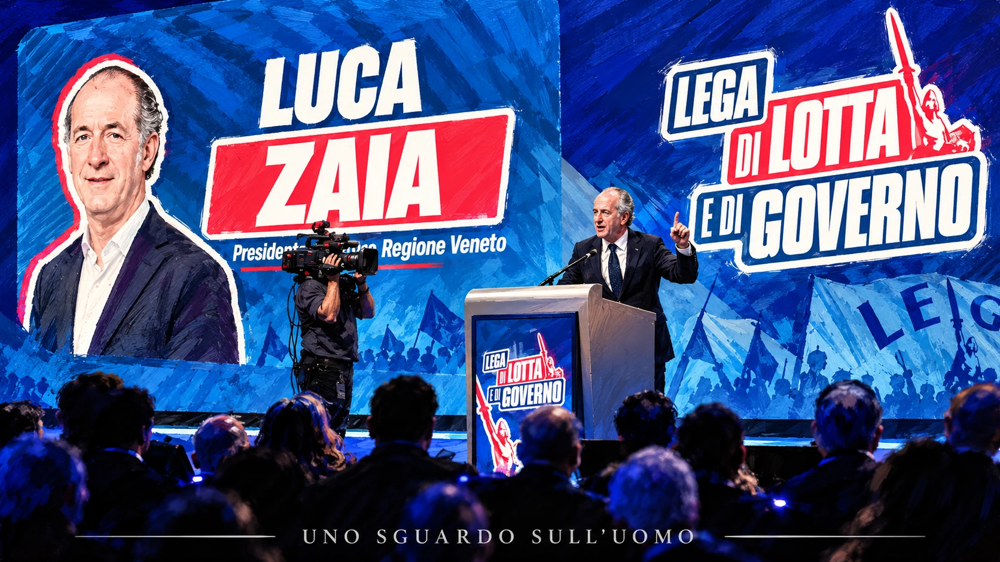

Matteo Salvini ha vinto il congresso della Lega. Ha ottenuto 465 voti contro i 146 di Massimo Garavaglia e resterà segretario per altri quattro anni. Se la domanda fosse soltanto chi controlla il partito, la risposta sarebbe già completa. Il congresso ha confermato che la maggioranza dei delegati considera ancora Salvini la guida più forte, oppure la guida meno rischiosa da sostituire in questa fase. Ma la domanda politica comincia proprio dove finisce il conteggio.
In questo dossier
- Il congresso non era una primaria aperta
- Il ventiquattro per cento non è una perdita da recuperare
- Le trattative erano iniziate prima del voto
- Il simbolo toglie Salvini ma non cancella la sua Lega
- La nuova segreteria organizza un potere che esisteva già
- Vannacci spiega perché la revoca può essere una sicurezza
- Una vittoria di Garavaglia avrebbe aperto un altro conflitto
- Zaia Fontana e Garavaglia non formano un unico fronte
- Zaia non è il capo del ventiquattro per cento
- La responsabilità viene prima dell'ambizione
- Tornare alle origini significa riunire ciò che la Lega è diventata
- La vicesegreteria può diventare un patto oppure una fotografia
- La salvezza dipende da ciò che verrà dopo
- Contraddittorio e condizioni che possono smentire la lettura
- Fonti
La Lega che esce da Milano non è il partito che Salvini ricevette nel 2013 e non è più nemmeno quello che alle elezioni europee del 2019 superò il 34 per cento. È un partito che conserva una presenza nazionale, governa il Paese, dispone di amministratori radicati e continua a identificarsi con il suo segretario; nello stesso tempo ha perduto consenso, ha visto nascere alla propria destra un concorrente guidato da Roberto Vannacci e ha riscoperto dentro di sé una domanda di autonomia, territorio e collegialità che la stagione della nazionalizzazione non ha cancellato.
Salvini ha dunque salvato la leadership. Non è ancora detto che abbia salvato la Lega. I puntini di sospensione del titolo non annunciano una condanna già scritta. Lasciano aperta la possibilità che il congresso diventi l'inizio di una ricostruzione. Perché ciò accada, però, la vittoria interna dovrà essere usata per riunire ciò che questi anni hanno prodotto, non per fingere che il problema sia scomparso insieme alla votazione.
Il congresso non era una primaria aperta
Il primo equivoco riguarda la natura del voto. Il congresso della Lega non può essere letto come una primaria aperta del Partito Democratico (PD), nella quale una platea di elettori più ampia degli iscritti partecipa alla scelta del segretario secondo le regole fissate dal partito. A Milano hanno votato delegati congressuali. Le cronache più coerenti sui numeri indicano 707 aventi diritto, 614 registrati e 611 votanti. Le 465 preferenze di Salvini e le 146 di Garavaglia sommano esattamente 611.
Quel 76 per cento descrive quindi il rapporto di forza fra i due candidati dentro il corpo congressuale che ha votato. Non significa che il 76 per cento degli elettori della Lega abbia scelto Salvini. Il 24 per cento di Garavaglia non rappresenta un quarto dell'elettorato nazionale, né un gruppo di persone che ha già abbandonato il partito. Rappresenta un dissenso interno che ha trovato un candidato e ha scelto di contarsi.
La distinzione non riduce il valore del risultato. Salvini ha vinto nettamente e una leadership politica non può essere considerata fragile soltanto perché esiste una minoranza. Impedisce però di trasformare il congresso in un sondaggio sul Paese. Gli elettori che hanno lasciato la Lega negli ultimi anni non erano nella sala. Non hanno votato né Salvini né Garavaglia. La salvezza elettorale del partito non poteva dunque uscire dalle urne congressuali.
Il segnale del 24 per cento resta importante per un'altra ragione. Una parte dei delegati ha ritenuto necessario scegliere un nome diverso dal segretario che guida la Lega dal 2013, pur sapendo che Salvini è vicepresidente del Consiglio, ministro e il volto più riconoscibile del partito. Il dato non autorizza a parlare di due Leghe già separate. Mostra che la domanda di cambiamento è entrata nell'organizzazione e non può essere liquidata come rumore prodotto dai giornali.
Il ventiquattro per cento non è una perdita da recuperare
Il 24 per cento non deve essere fatto rientrare, perché non è mai uscito. Chi ha votato Garavaglia ha partecipato al congresso della Lega e, proprio attraverso quel voto, ha esercitato un diritto interno. Presentarlo come un gruppo da riconquistare significherebbe trasformare una differenza politica in una diserzione che non è avvenuta.
Il problema viene dopo. Un dissenso che non trova spazio può diventare demotivazione dei militanti, conflitto nelle strutture locali, minore disponibilità alla campagna elettorale e messaggi contraddittori rivolti ai cittadini. Non esiste una corrispondenza matematica fra delegati ed elettori, ma esiste una relazione politica fra chi organizza il consenso e chi, alla fine, decide se votare.
Salvini non deve recuperare 146 delegati perduti. Deve impedire che il disagio espresso da quei delegati si sommi al logoramento già visibile fuori dal partito. La differenza è sostanziale. Nel primo caso basterebbe offrire qualche incarico. Nel secondo occorre dimostrare che territorio, autonomia e amministratori non sono diventati una scenografia utile soltanto nei congressi.
Anche il restante 76 per cento va letto con la stessa prudenza. Non è un blocco omogeneo e non consegna a Salvini una delega in bianco. Può comprendere fedeltà personale, convinzione politica, timore delle conseguenze di una sostituzione e giudizio sulla debolezza dell'alternativa. Il congresso ha misurato una scelta, non la psicologia di ogni delegato. La lettura politica deve partire dal risultato senza fingere di conoscere la motivazione individuale di tutti.
Le trattative erano iniziate prima del voto
Il congresso non nasce in due giorni. Il 9 settembre Salvini incontra a Roma Luca Zaia, Massimiliano Fedriga, Attilio Fontana e Maurizio Fugatti. La nota ufficiale parla di programma comune, risultati amministrativi e preparazione delle scadenze elettorali. Le cronache descrivono la disponibilità del segretario a condividere maggiormente la gestione del partito senza lasciare la segreteria. Un secondo incontro, il 17 settembre, insiste sulla valorizzazione degli amministratori e dei territori.
Alla vigilia del voto arrivano due decisioni che rispondono direttamente alle tensioni accumulate. Il congresso approva una mozione sulla questione settentrionale, sottoscritta anche dai governatori, e introduce nello statuto una segreteria politica con un massimo di nove membri. Il nuovo organo deve rappresentare in modo equilibrato i livelli nazionale, regionale e locale e collaborare con il segretario nell'attuazione della linea politica.
Salvini separa così due questioni che i suoi critici tendevano a sovrapporre. Accetta che la gestione debba cambiare, ma chiede che il cambiamento avvenga sotto la sua guida. Non è una resa alla fronda e non è neppure la semplice conservazione dell'esistente. È il tentativo di assorbire una parte della contestazione senza aprire una successione che avrebbe attraversato il partito e il governo.
La ricostruzione pubblicata da Il Giorno il 27 ottobre aggiunge un elemento: un patto di desistenza tra Salvini e Zaia, mediato da Claudio Durigon, avrebbe sottratto agli sfidanti una parte decisiva dei voti veneti e aperto la strada a una possibile vicesegreteria. Non è un accordo ufficiale reso pubblico in tutti i suoi termini. Va quindi trattato per ciò che è: una ricostruzione giornalistica compatibile con la sequenza degli incontri e con l'invito rivolto a Zaia, non una prova definitiva delle intenzioni dei protagonisti.
Il simbolo toglie Salvini ma non cancella la sua Lega
Il nuovo simbolo elimina la dicitura Salvini premier e introduce il nome Lega Italia Federale. Resta Alberto da Giussano, torna esplicito il federalismo e la parola Italia conserva la dimensione nazionale conquistata durante la segreteria salviniana. È un cambiamento grafico, ma soprattutto una dichiarazione politica: il partito prova a presentarsi come qualcosa di più duraturo del nome del proprio leader.
La nuova legge elettorale ha offerto la ragione immediata per intervenire sul contrassegno. Essa richiede alle forze della coalizione di indicare lo stesso candidato alla Presidenza del Consiglio; non contiene però un divieto testuale generale di inserire nel simbolo il nome di Salvini. La modifica era quindi opportuna nel nuovo quadro, ma rimane anche una scelta politica. Salvini ha deciso di togliersi dal marchio mentre chiedeva al congresso di confermarlo alla guida.
La formula Lega Italia Federale non nasce nel 2026. Nell'aprile 1993 Umberto Bossi ragionava già su quel nome per superare i confini della Lega Nord senza abbandonare l'idea federale; la denominazione venne poi utilizzata nella stagione elettorale successiva, compreso il simbolo delle europee del 1994. Il precedente chiarisce un punto spesso dimenticato: l'espansione oltre il Nord e la difesa delle autonomie non sono necessariamente due progetti incompatibili.
Qui il richiamo alle origini diventa più serio della nostalgia. Bossi non costruì la Lega restringendo ogni movimento alla propria regione. Aggregò la Liga Veneta, la Lega Lombarda e altre formazioni territoriali dentro un soggetto capace di incidere a Roma. Tornare alle origini non significa quindi tornare indietro fino a cancellare il Sud o la presenza nel governo nazionale. Significa ripetere l'atto politico che rese possibile la Lega: unire identità territoriali differenti senza svuotarle.
La nuova segreteria organizza un potere che esisteva già
La segreteria politica è stata raccontata come una novità epocale. La novità organizzativa esiste, ma deve essere collocata nel quadro corretto. Lo statuto approvato il 5 aprile 2025 attribuiva già al segretario federale il potere di nominare e revocare fino a quattro vicesegretari, compreso il vicario. Salvini non ha ottenuto adesso per la prima volta la possibilità di scegliere e rimuovere i propri vice.
L'emendamento del 2026 crea un organo più ampio, con funzioni politiche e di indirizzo, composto dal segretario e da un massimo di nove membri nominati e revocabili dal segretario. La composizione deve garantire l'equilibrio tra rappresentanza nazionale, regionale e locale. Viene inoltre istituito un coordinatore federale delle segreterie regionali, anch'esso nominato e revocato dal segretario, con il compito di raccordare e vigilare sulle strutture territoriali.
La Lega passa così da un partito personale a un partito personale strutturato. La formula non è un gioco di parole. Salvini resta il centro dell'organizzazione, ma costruisce attorno alla propria leadership organismi nei quali distribuire responsabilità, assorbire il confronto e rendere riconoscibili i diversi livelli del partito. La questione decisiva non è chi firma la nomina. È quanto potere politico reale accompagnerà le deleghe.
Che il segretario scelga i propri collaboratori non è, di per sé, una prova di sottomissione. È anche una forma di responsabilità. Chi dirige un partito deve poter comporre una squadra coerente e intervenire quando un vice usa la posizione per costruire un progetto incompatibile con quello comune. Il limite al potere formale può essere politico: revocare un dirigente dotato di consenso autonomo può avere un costo superiore al vantaggio organizzativo.
Vannacci spiega perché la revoca può essere una sicurezza
Il precedente più vicino è Roberto Vannacci. Salvini lo porta nella Lega, gli offre una candidatura alle europee, ne valorizza il consenso personale e nel maggio 2025 lo nomina vicesegretario. Meno di nove mesi dopo, Vannacci lascia il partito e fonda Futuro Nazionale. Alla rottura seguono parlamentari, consiglieri e militanti; nell'autunno 2026 il nuovo soggetto viene accreditato da diverse rilevazioni di un consenso paragonabile o superiore a quello della Lega.
La storia dimostra che il rischio non era teorico. Un vicesegretario può usare l'autorevolezza ricevuta dal partito per rafforzare un'identità personale fino a trasformarla in concorrenza. In questo senso la possibilità di revoca è una garanzia organizzativa, non soltanto uno strumento con cui il leader assegna potere a se stesso.
Sarebbe però sbagliato attribuire alla nuova regola una capacità che non possiede. Anche lo statuto precedente consentiva a Salvini di revocare i vice. La rottura con Vannacci non avvenne perché mancava una clausola. Avvenne perché il conflitto politico era già cresciuto fino a rendere conveniente l'uscita. Le norme possono abbreviare l'ambiguità e rendere chiara la catena di responsabilità; non possono impedire a una personalità dotata di voti e visibilità di fondare un altro partito.
Vannacci serve anche come confronto con Zaia. Un protagonista arrivato da poco nella Lega è riuscito a costruire in pochi mesi un soggetto competitivo. Zaia disponeva da anni di consenso personale, esperienza amministrativa, relazioni territoriali e riconoscibilità nazionale. Dire che non avrebbe potuto preparare un'alternativa perché il congresso era favorevole a Salvini confonde il giorno del voto con i mesi nei quali un'alternativa può essere costruita.
Una vittoria di Garavaglia avrebbe aperto un altro conflitto
La candidatura di Massimo Garavaglia ha avuto una funzione reale: ha consentito al dissenso di esistere e ha impedito che la conferma di Salvini avvenisse ancora per acclamazione. Ciò non obbliga a considerare strategicamente risolta l'ipotesi di una sua vittoria. Sostituire Salvini alla segreteria non avrebbe rimosso Salvini dalla politica.
Il giorno successivo al congresso, Salvini sarebbe rimasto vicepresidente del Consiglio, ministro delle infrastrutture e dei trasporti e il dirigente leghista con maggiore esposizione nazionale. Garavaglia avrebbe controllato il partito mentre il segretario sconfitto continuava a occupare il centro della rappresentazione governativa. Alla fine della legislatura si sarebbe aperta una competizione ancora più difficile: candidature, alleanze, linea politica e futuro personale di Salvini avrebbero attraversato ogni decisione della nuova segreteria.
Vincere una segreteria non equivale a saper governare le conseguenze della vittoria. La sfida poteva produrre il rinnovamento richiesto; poteva anche creare due centri di legittimazione, uno organizzativo e uno istituzionale e mediatico. Non conosciamo l'eventuale piano privato di Garavaglia per affrontare questo problema. Possiamo però giudicare il rischio politico visibile.
La scelta dei delegati appare allora meno semplice di una contrapposizione fra conservazione e cambiamento. Una parte della Lega ha chiesto discontinuità. La maggioranza ha considerato Salvini ancora necessario, forse anche perché rimuoverlo nel pieno dell'esperienza di governo avrebbe aperto una crisi più grande di quella che si voleva risolvere. Il risultato conferma la continuità, ma obbliga proprio Salvini a dimostrare di saperla usare per cambiare ciò che non funziona.
Zaia Fontana e Garavaglia non formano un unico fronte
Autonomia, Nord e territorio sono temi comuni a molti dirigenti leghisti. Non bastano a trasformarli in una corrente con una strategia unica. Attilio Fontana ha sostenuto Garavaglia. Massimiliano Romeo ha dato voce al disagio lombardo. Zaia, Fedriga e Fugatti non hanno offerto la stessa indicazione pubblica di voto.
L'errore sarebbe sommare tutte le critiche a Salvini e assegnarle automaticamente a Zaia. Se il presidente veneto fosse stato il capo naturale della candidatura Garavaglia, avrebbe potuto sostenerla apertamente. Se Fontana e gli altri avessero riconosciuto una leadership comune in Zaia, avrebbero potuto lavorare per costruire una sua candidatura o una linea esplicitamente unitaria. Non è accaduto.
Questo non dimostra che Zaia fosse vicino a Salvini su ogni scelta. Dimostra che la sua posizione era diversa. Ha condiviso la necessità di riportare territorio e federalismo al centro, ma non ha trasformato quella necessità in una battaglia personale per la segreteria. Il possibile accordo tra Salvini e Zaia non coincide dunque con la riabilitazione di tutti gli sfidanti e non cancella il dissenso lombardo.
Salvini può cercare di recuperare temi ed elettori senza riconoscere ad Attilio Fontana il ruolo di interlocutore principale. Può affidare a Zaia la funzione di garante del riequilibrio territoriale lasciando Garavaglia e Romeo nella posizione di chi ha sfidato apertamente il segretario. Questa selettività può facilitare la ricomposizione, ma può anche lasciare irrisolta una parte del conflitto. Il risultato dipenderà dalle deleghe e dal comportamento successivo, non dalla fotografia del congresso.

Zaia non è il capo del ventiquattro per cento
Zaia non ha bisogno di essere nominato rappresentante degli sconfitti per avere un ruolo decisivo. Il suo peso nasce dal Veneto, dalla lunga esperienza amministrativa, dalla riconoscibilità personale e dalla capacità di parlare a un elettorato più ampio del perimetro di una corrente congressuale. Ridurlo al 24 per cento significherebbe diminuirlo e, nello stesso tempo, attribuirgli una delega che quel voto non gli ha consegnato.
Il Veneto non è una voce generica del curriculum. È una regione con una forte identità, un tessuto produttivo diffuso, amministratori locali e interlocutori economici abituati a misurare la politica sui risultati. Quindici anni alla guida di quel sistema offrono a Zaia strumenti che non derivano soltanto dal consenso: conoscenza dei bilanci, dei servizi, delle imprese, dei rapporti territoriali e del costo concreto delle decisioni.
Anche Fontana ha governato una grande regione. L'esperienza, da sola, non produce lo stesso capitale politico. Il consenso personale di Zaia e la capacità di mantenere una relazione autonoma con il proprio territorio lo collocano in una posizione differente. Fontana ha sostenuto un altro candidato senza esporsi direttamente. Zaia avrebbe potuto usare la propria forza per preparare una sfida personale e ha scelto di non farlo.
Il suo compito possibile non è riportare nel partito persone che non se ne sono andate. È garantire che il risultato congressuale non venga interpretato come chiusura. Può parlare a chi ha votato Salvini senza chiedergli di rinnegare il segretario; può parlare a chi ha votato Garavaglia senza trasformarlo in un nemico interno. Questa posizione intermedia non è debolezza. È una risorsa se viene accompagnata da responsabilità reali.
La responsabilità viene prima dell'ambizione
La lettura maturata in questo dossier si allontana dall'idea di Zaia come opportunista in attesa del momento migliore per colpire. Un uomo che aspetta soltanto l'indebolimento del capo avrebbe interesse ad alimentare ogni crepa, lasciare che gli sfidanti consumino Salvini e presentarsi dopo la rottura come soluzione inevitabile. Il comportamento pubblico di Zaia va nella direzione opposta.
Alla vigilia del voto chiede che il congresso finisca in unità e serenità. Dice che chi perde dovrà riconoscere il segretario e che chi vince dovrà rispettare le idee differenti presenti nella famiglia leghista. Quando gli viene chiesto se Massimiliano Romeo debba essere sostituito come capogruppo al Senato, risponde che sarebbe meglio arrivare alle elezioni con la squadra esistente.
Queste dichiarazioni non rivelano le motivazioni private di Zaia e non devono essere trasformate in una confessione. Sono però comportamenti politici osservabili. Nel momento in cui avrebbe potuto usare il congresso per indebolire entrambi i contendenti, tutela la legittimità del vincitore e chiede rispetto per gli sconfitti. Non si colloca fuori dal conflitto per indifferenza. Cerca di impedirgli di distruggere la squadra.
Zaia aveva un capitale politico da spendere contro Salvini e ha scelto di usarlo per tenere insieme la Lega. La rinuncia a costruire una candidatura nei mesi precedenti non dimostra che avrebbe certamente vinto. Dimostra che non ha considerato la conquista della segreteria l'unico modo per esercitare leadership. In politica, anche la scelta di non aprire una guerra può essere una prova di forza.
Questa responsabilità non obbliga Zaia ad accettare qualunque incarico. Un ingresso privo di deleghe lo trasformerebbe nella garanzia simbolica di un equilibrio deciso altrove. La stessa coerenza che gli ha impedito di usare il dissenso come arma personale può portarlo a rifiutare un ruolo decorativo. Per questo la prudenza manifestata dopo l'invito di Salvini non equivale a un ricatto e non equivale a una resa.
Tornare alle origini significa riunire ciò che la Lega è diventata
Zaia ha un interesse storico a riportare il partito alle sue origini. Ciò non significa cancellare la Lega nazionale, abbandonare il Mezzogiorno o consegnare a Salvini il certificato di un fallimento totale. La fase salviniana ha prodotto elettori, amministratori, parlamentari, presenza nel governo e un linguaggio politico che ormai appartengono alla storia del partito. Una rinascita non può cominciare fingendo che tutto questo non sia mai esistito.
Il ritorno alle origini diventa paradossalmente il contrario di una restaurazione. La Lega di Bossi nacque quando identità territoriali diverse accettarono di federarsi. Oggi il materiale da federare è più ampio: il Nord autonomista, la presenza nazionale, gli amministratori, l'esperienza di governo, gli elettori meridionali conquistati negli anni di maggiore espansione e una destra identitaria che Vannacci tenta di separare dalla Lega.
Il momento richiede un'apertura, non un nuovo rappresentante che sostituisca una fazione con un'altra. Salvini possiede la solidità congressuale e il peso governativo. Zaia possiede credibilità territoriale e un consenso che non dipende interamente dalla segreteria. Se queste forze vengono usate per annullarsi, la Lega continuerà a perdere pezzi. Se vengono federate, il nuovo simbolo potrà descrivere un progetto e non soltanto un compromesso grafico.
La salvezza non consiste quindi nel ritorno di Bossi come persona o nella ripetizione letterale della Lega Nord. Consiste nel recupero del suo gesto politico originario: trasformare differenze territoriali in una forza comune abbastanza solida da incidere sul governo nazionale. La Lega Italia Federale può essere il nome di questa operazione, ma il nome non la realizza.
La vicesegreteria può diventare un patto oppure una fotografia
Se Zaia accetterà una vicesegreteria, la domanda non sarà chi lo ha nominato. La risposta è già nello statuto: lo nominerà Salvini e potrà revocarlo. La domanda sarà che cosa potrà fare. Autonomie, rapporto con gli amministratori, organizzazione territoriale e selezione della classe dirigente sono ambiti nei quali una delega reale renderebbe il suo ruolo verificabile.
Una nomina senza competenze chiare servirebbe a fotografare l'unità. Salvini mostrerebbe Zaia al proprio fianco, Zaia presterebbe il proprio consenso all'operazione e il partito potrebbe dichiarare chiuso il conflitto. Ma la fotografia non durerebbe oltre la prima decisione importante presa senza coinvolgerlo.
Un patto politico avrebbe un contenuto diverso. Salvini conserverebbe la guida riconosciuta dal congresso e la responsabilità della linea nazionale. Zaia garantirebbe che il riequilibrio territoriale non venga usato soltanto come slogan. La revocabilità resterebbe giuridicamente nelle mani del segretario, ma il costo politico di una rottura proteggerebbe l'autonomia sostanziale del vice.
Nemmeno questo accordo risolverebbe tutto. Fontana, Garavaglia e Romeo non scomparirebbero. Il disagio lombardo non coincide con quello veneto. Vannacci continuerebbe a competere alla destra della Lega. Il governo continuerebbe a esporre Salvini al giudizio su infrastrutture, alleanze e risultati. Una vicesegreteria può aprire un metodo; non può sostituire il lavoro necessario a farlo vivere.
La salvezza dipende da ciò che verrà dopo
Il congresso ha consegnato a Salvini una condizione favorevole: per i prossimi mesi nessuno può sostenere seriamente che la sua leadership interna sia priva di legittimità. Proprio questa forza rende più pesante la responsabilità. Se userà il risultato per chiudere il confronto, non potrà attribuire ad altri la successiva dispersione del consenso. Se lo userà per aprire il partito senza dissolverne la guida, avrà trasformato una vittoria personale in una possibilità collettiva.
La salvezza elettorale richiederà risultati che il congresso non può produrre: riconquistare fiducia al Nord senza perdere la presenza nazionale; dimostrare che il federalismo ha contenuti amministrativi e non soltanto simbolici; impedire che Futuro Nazionale monopolizzi la protesta identitaria; collegare il lavoro di governo a una prospettiva riconoscibile per il partito.
Zaia può essere il punto di passaggio fra queste esigenze. Non perché possieda una formula miracolosa, e non perché rappresenti tutti coloro che hanno votato contro Salvini. Può esserlo perché ha compreso la solidità del segretario, non ha interesse a distruggere le conquiste nazionali della Lega e conserva l'autorevolezza necessaria per ricordare al partito da dove viene.
Questa è la ragione del titolo. Salvini ha ottenuto la propria salvezza congressuale. Ha neutralizzato il rischio immediato di una successione, ha tolto il nome dal simbolo senza perdere il controllo dell'organizzazione e ha costruito una struttura nella quale può coinvolgere i territori. La salvezza della Lega, però, non è ancora arrivata. Arriverà soltanto se quella struttura diventerà una federazione politica reale e se il consenso interno tornerà a produrre consenso nel Paese.
I puntini di sospensione restano aperti su Zaia. Se accetterà un ruolo vero, la Lega potrà ricucire, crescere e consolidare senza rinnegare né le origini né gli anni della trasformazione nazionale. Se l'offerta sarà soltanto simbolica, il nuovo nome rischierà di coprire il vecchio problema. La guida è salva. Il partito deve ancora scegliere se salvarsi insieme.
Contraddittorio e condizioni che possono smentire la lettura
Questa lettura cambierebbe se la nuova segreteria politica distribuisse deleghe soltanto formali, se Zaia rifiutasse ogni coinvolgimento o se accettasse un incarico senza incidere sulle decisioni. Cambierebbe anche se il dissenso lombardo si organizzasse autonomamente, se i rapporti elettorali della Lega migliorassero senza alcuna ricomposizione territoriale o se Futuro Nazionale perdesse consistenza fino a smettere di rappresentare una concorrenza.
La ricostruzione del patto di desistenza resta attribuita alla stampa e non può essere trattata come un accordo pubblico già dimostrato. Le intenzioni personali di Salvini e Zaia non sono accessibili. Il dossier interpreta scelte, tempi, dichiarazioni e rapporti di forza. Non pretende di trasformare una deduzione politica in un fatto documentato.
Anche i sondaggi hanno un limite preciso. Le rilevazioni che avvicinano Futuro Nazionale alla Lega mostrano uno spazio competitivo, non anticipano il risultato delle urne. Allo stesso modo, il 24 per cento congressuale misura i delegati che hanno scelto Garavaglia, non gli elettori che domani voteranno contro Salvini. La verifica decisiva arriverà dalle elezioni, dal funzionamento della nuova struttura e dalla capacità del partito di tradurre il federalismo in una proposta riconoscibile.
FONTI
Le fonti sono riportate per consentire il controllo dei dati e delle ricostruzioni. Nel corpo del dossier non sono inseriti richiami numerici: i documenti sostengono i fatti verificabili, non sostituiscono l'analisi editoriale.
- Michela Suglia, ANSA, Salvini resta leader della Lega ma avverte stop armi all'Ucraina, 26 ottobre 2026.
- Rai News Trento, Congresso Lega Salvini confermato segretario con il 76 per cento dei voti, 25 ottobre 2026.
- Lega, nota sull'incontro tra Salvini Fedriga Fontana Fugatti e Zaia, 9 settembre 2026.
- ANSA, nota congiunta sull'incontro tra i vertici della Lega e sulla valorizzazione degli amministratori e dei territori, 17 settembre 2026.
- Nicola Mente, Agenzia DIRE, Dal Nord alla remigrazione la Lega approva undici mozioni, 24 ottobre 2026.
- Adnkronos ripresa da Affaritaliani, Lega approvate le modifiche dello Statuto arrivano segreteria politica e coordinatore federale, 24 ottobre 2026.
- Il Giorno, Lega Salvini ridisegna i vertici e il patto di desistenza con Zaia, 27 ottobre 2026.
- Nicolò Rubeis, ANSA, Nasce Lega Italia Federale il nuovo simbolo senza il nome di Salvini, 25 ottobre 2026.
- L'Unità, archivio del 24 aprile 1993 sulla proposta di Lega Italia Federale; documentazione elettorale sulle europee del 1994.
- Lega per Salvini Premier, Statuto federale approvato dal Congresso federale del 5 aprile 2025, articolo 13.
- ANSA, Vannacci lascia la Lega e lancia Futuro Nazionale, 3 e 4 febbraio 2026; ANSA, Ziello e Sasso lasciano la Lega e passano con Vannacci, 6 febbraio 2026.
- SWG per TG La7, intenzioni di voto nazionali, 26 ottobre 2026.
- ANSA, Garavaglia raggiunge le firme per la candidatura al congresso della Lega, 21 ottobre 2026; cronache precongressuali sulle posizioni dei governatori.
- Askanews, Lega Zaia dal congresso si esca uniti chi vince rispetti le idee altrui, 24 ottobre 2026.
- LaPresse, Lega Zaia io vicesegretario non è all'ordine del giorno vediamo se ci sarà modifica dello statuto, 10 giugno 2026.
- Uno Sguardo sull'Uomo, Lega il ritorno di Bossi, 12 agosto 2026.
- Uno Sguardo sull'Uomo, Salvini e il ministero maledetto, 6 settembre 2026.
- Repubblica e Il Foglio, cronache sulla cabina di regia territoriale e sui rapporti interni alla Lega, giugno e settembre 2026.
Criterio editoriale
Il dossier distingue il voto dei delegati dal consenso elettorale, i poteri previsti dallo statuto dalle loro conseguenze politiche e le ricostruzioni giornalistiche dai fatti documentati. Le intenzioni personali non accessibili restano interpretazioni e i sondaggi non sono presentati come risultati elettorali.